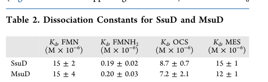

ssuD (PP_0238, UniProt Q88R95) encodes the FMNH2-dependent alkanesulfonate monooxygenase SsuD (EC 1.14.14.5), the oxygenase component of a two-component desulfonating system. SsuD performs the oxidative half-reaction using reduced flavin (FMNH2) supplied in trans by the NADPH-dependent FMN reductase SsuE, converting alkanesulfonates to the corresponding aldehyde plus sulfite. The reaction releases sulfur (as sulfite) for assimilation and enables growth on alkanesulfonates as alternative sulfur sources when inorganic sulfate is limiting, as part of the sulfate-starvation-induced ssu locus/operon. SsuD is a member of the SsuD/luciferase-like (TIM-barrel) family and acts in the cytosol downstream of sulfonate import by the SsuABC ABC transporter.
| GO Term | Evidence | Action | Reason |
|---|---|---|---|
|
GO:0008726
alkanesulfonate monooxygenase activity
|
IEA
GO_REF:0000120 |
ACCEPT |
Summary: Alkanesulfonate monooxygenase activity (EC 1.14.14.5) is the correct core molecular function for SsuD. SsuD is an FMNH2-dependent monooxygenase that catalyzes oxygenation of alkanesulfonates, releasing aldehyde + sulfite; reduced flavin is supplied in trans by the partner reductase SsuE. The falcon deep research independently confirms this enzymatic identity and the two-component mechanism.
Reason: UniProt assigns EC 1.14.14.5 and the FMNH2-dependent desulfonation reaction (Rhea RHEA:23064), and the deep research confirms SsuD as an FMNH2-dependent alkanesulfonate monooxygenase acting with the SsuE FMN reductase. This is the well-supported core molecular function.
Supporting Evidence:
file:PSEPK/ssuD/ssuD-uniprot.txt
Catalyzes the desulfonation of aliphatic sulfonates
file:PSEPK/ssuD/ssuD-uniprot.txt
Reaction=an alkanesulfonate + FMNH2 + O2 = an aldehyde + FMN + sulfite
file:PSEPK/ssuD/ssuD-goa.tsv
GO:0008726 alkanesulfonate monooxygenase activity
file:PSEPK/ssuD/ssuD-deep-research-falcon.md
SsuD is an FMNH2-dependent alkanesulfonate monooxygenase
file:PSEPK/ssuD/ssuD-deep-research-falcon.md
SsuD operates with **SsuE**, an **NADPH-dependent FMN reductase** that supplies reduced flavin (FMNH2)
|
|
GO:0016705
oxidoreductase activity, acting on paired donors, with incorporation or reduction of molecular oxygen
|
IEA
GO_REF:0000002 |
MARK AS OVER ANNOTATED |
Summary: This oxidoreductase parent is true but less informative than the substrate-specific term alkanesulfonate monooxygenase activity (GO:0008726). The deep research confirms SsuD is a flavin-dependent monooxygenase performing the oxidative half-reaction, but the precise EC 1.14.14.5 term should be the one retained as the core function.
Reason: The exact substrate-specific monooxygenase term GO:0008726 captures the same activity more informatively, so this broad oxygenase parent is redundant over-annotation for the core molecular function.
Supporting Evidence:
file:PSEPK/ssuD/ssuD-goa.tsv
GO:0016705 oxidoreductase activity
file:PSEPK/ssuD/ssuD-deep-research-falcon.md
SsuD as a **monofunctional flavin-dependent monooxygenase** that performs the **oxidative half-reaction** and depends on **externally supplied FMNH2**
|
|
GO:0046306
alkanesulfonate catabolic process
|
IEA
GO_REF:0000118 |
ACCEPT |
Summary: Alkanesulfonate catabolism is the correct biological process for SsuD. SsuD desulfonates alkanesulfonates to release sulfite, the key catabolic step that allows the carbon backbone (as an aldehyde) to be released and the sulfur (as sulfite) to be assimilated. The deep research confirms this is the physiological role of the sulfate-starvation-induced ssu locus.
Reason: SsuD catalyzes desulfonation of alkanesulfonates to release sulfite, fitting the alkanesulfonate catabolic process; the deep research documents the ssu locus as central to organosulfur metabolism, enabling growth on alkanesulfonates as sulfur sources under sulfate starvation.
Supporting Evidence:
file:PSEPK/ssuD/ssuD-uniprot.txt
Catalyzes the desulfonation of aliphatic sulfonates
file:PSEPK/ssuD/ssuD-goa.tsv
GO:0046306 alkanesulfonate catabolic process
file:PSEPK/ssuD/ssuD-deep-research-falcon.md
the **ssu locus is central to organosulfur metabolism**, particularly enabling growth on alkanesulfonates as sulfur sources under sulfate starvation
file:PSEPK/ssuD/ssuD-deep-research-falcon.md
producing an unstable hydroxysulfonate intermediate that decomposes to an **aldehyde** and **sulfite**
|
Q: Which reduced flavin transfer partner supplies FMNH2 to SsuD in KT2440 under sulfur limitation, and is it the cognate SsuE encoded in the PP_0238 locus?
Q: What is the in vivo alkanesulfonate substrate range of KT2440 SsuD, and does it show the same chain-length dependence (poor short-chain turnover) reported for other SsuD enzymes?
Experiment: Assay SsuD desulfonation activity (sulfite release and aldehyde product formation) reconstituted with the cognate SsuE FMN reductase across a range of Cn-alkanesulfonates, and monitor KT2440 wild-type vs ΔssuD growth on representative alkanesulfonates as sole sulfur sources under sulfate limitation.
Type: enzyme reconstitution and sulfur-source growth assay
The research report should be a detailed narrative explaining the function, biological processes, and localization of the gene product. Citations should be given for all claims.
You should prioritize authoritative reviews and primary scientific literature when conducting research. You can supplement
this with annotations you find in gene/protein databases, but these can be outdated or inaccurate.
We are specifically interested in the primary function of the gene - for enzymes, what reaction is catalyzed, and what is the substrate specificity? For transporters, what is the substrate? For structural proteins or adapters, what is the broader structural role? For signaling molecules, what is the role in the pathway.
We are interested in where in or outside the cell the gene product carries out its function.
We are also interested in the signaling or biochemical pathways in which the gene functions. We are less interested in broad pleiotropic effects, except where these elucidate the precise role.
Include evidence where possible. We are interested in both experimental evidence as well as inference from structure, evolution, or bioinformatic analysis. Precise studies should be prioritized over high-throughput, where available.
The UniProt target Q88R95 is annotated as alkan(es)ulfonate monooxygenase SsuD (EC 1.14.14.5), an FMNH2-dependent aliphatic sulfonate monooxygenase belonging to the SsuD family. In Pseudomonas, ssuD is consistently described as the oxygenase component of a two-component system with SsuE (an NADPH:FMN reductase), encoded in a sulfate-starvation-induced ssu locus/operon that supports growth on organosulfur compounds. This functional identity is strongly supported by genetic and biochemical characterization of the Pseudomonas putida ssuEADCBF locus (strain S-313), including explicit description of SsuD as an FMNH2-dependent monooxygenase/desulfonating oxygenase and SsuE as the FMN reductase partner, with ssu expression induced during sulfate starvation. (https://doi.org/10.1128/jb.182.10.2869-2878.2000; May 2000) (kahnert2000thessulocus pages 3-4, kahnert2000thessulocus pages 6-7)
Critical scope note: In the retrieved literature, direct wet-lab characterization of PP_0238/Q88R95 in KT2440 specifically was not found. Therefore, KT2440 functional annotation below combines: (i) KT2440 genome-level evidence for sulfonate/taurine/sulfate transport capacity, and (ii) strong operon-level and enzyme-mechanism conservation from experimentally characterized Pseudomonas ssu loci and SsuD homolog studies. (santos2004insightsintothe pages 8-10, kahnert2000thessulocus pages 3-4)
SsuD is an FMNH2-dependent alkanesulfonate monooxygenase (desulfonative oxygenase) that enables bacteria to use alkanesulfonates (and in some organisms certain aryl/alkyl sulfonates) as alternative sulfur sources when inorganic sulfate is limiting. In Pseudomonas, SsuD operates with SsuE, an NADPH-dependent FMN reductase that supplies reduced flavin (FMNH2). (maren2001sulfateesterutilization pages 13-20, maren2001sulfateesterutilization pages 60-64, kahnert2000thessulocus pages 6-7)
A key mechanistic concept is that FMNH2 is used as a diffusible cosubstrate rather than a tightly bound prosthetic group in this two-component monooxygenase system: SsuE reduces FMN using NADPH, and the reduced flavin is then used by SsuD for the oxygenation step. (abdurachim2007studiestoelucidate pages 54-58, maren2001sulfateesterutilization pages 60-64)
For aliphatic sulfonates, desulfonation by SsuD/SsuE is commonly described as proceeding via α-oxygenation of the sulfonate, producing an unstable hydroxysulfonate intermediate that decomposes to an aldehyde and sulfite (SO3^2−), thereby releasing sulfur in a form that can be assimilated. (maren2001sulfateesterutilization pages 60-64)
For aromatic sulfonates in Pseudomonas, utilization can require additional gene products beyond ssuD/ssuE (e.g., asf genes), and the process yields phenolic products + sulfite; SsuE is described as particularly important for aromatic sulfonate utilization and may contribute structurally to a larger enzyme complex. (maren2001sulfateesterutilization pages 60-64, maren2001sulfateesterutilization pages 142-145, kahnert2000thessulocus pages 6-7)
In Pseudomonas putida S-313, the ssuEADCBF locus encodes two functional modules: (i) an ABC-type transport system (SsuA/SsuB/SsuC) for sulfonate uptake, and (ii) the two-component monooxygenase (SsuD oxygenase + SsuE FMN reductase), with an additional small protein SsuF (function less clear) encoded in the cluster. (https://doi.org/10.1128/jb.182.10.2869-2878.2000; May 2000) (kahnert2000thessulocus pages 3-4)
Expression of these organosulfur acquisition systems is reported to occur under sulfate starvation (i.e., when sulfate is absent), consistent with the “sulfate starvation-induced stimulon” concept. (maren2001sulfateesterutilization pages 57-60, kahnert2000thessulocus pages 6-7)
Mechanistic work on SsuD homologs describes SsuD as a monofunctional flavin-dependent monooxygenase that performs the oxidative half-reaction and depends on externally supplied FMNH2. Structural descriptions indicate oligomerization (homotetramer reported for E. coli SsuD) and a TIM-barrel-like fold with conserved active-site residues important for catalysis and/or gating. (abdurachim2007studiestoelucidate pages 54-58)
A more recent structure-function study emphasizes that FMNH2/substrate binding induces conformational changes including closure of a mobile loop over the active site, which is important for excluding solvent and stabilizing reactive intermediates during desulfonation. (https://doi.org/10.1021/acs.biochem.2c00586; Dec 2022) (somai2022shorteralkanesulfonatecarbon pages 1-2, somai2022shorteralkanesulfonatecarbon pages 4-5)
A recent steady-state analysis compared an SsuD with the related MsuD and showed that substrate carbon-chain length can strongly affect catalytic competence. Under the reported conditions, SsuD showed measurable activity on C4–C10 alkanesulfonates with increasing catalytic efficiency for longer chains (e.g., SsuD kcat/Km for decanesulfonate reported as 3.4 × 10^4 M^−1 s^−1), whereas SsuD activity on methanesulfonate (C1) could not be determined in that assay system. (somai2022shorteralkanesulfonatecarbon pages 3-4, somai2022shorteralkanesulfonatecarbon pages 4-5)
Notably, binding affinity does not necessarily predict turnover: SsuD bound methanesulfonate with Kd = 15 ± 1 µM, similar to its binding of octanesulfonate (Kd = 8.7 ± 0.7 µM), yet did not show detectable sulfite production from methanesulfonate under the experimental conditions. This supports a current mechanistic model where short-chain substrates can bind but fail to maintain the active-site architecture needed for productive catalysis. (somai2022shorteralkanesulfonatecarbon pages 4-5)
The same study quantified that both enzymes bind FMNH2 ~100-fold more tightly than FMN (e.g., SsuD Kd(FMNH2) = 0.19 ± 0.02 µM versus Kd(FMN) = 15 ± 2 µM), consistent with FMNH2 being the catalytically relevant cosubstrate. (somai2022shorteralkanesulfonatecarbon pages 4-5)
| Data type | Ligand / substrate | SsuD kcat (s^-1) | SsuD Km (µM) | SsuD kcat/Km (×10^4 M^-1 s^-1) | MsuD kcat (s^-1) | MsuD Km (µM) | MsuD kcat/Km (×10^4 M^-1 s^-1) | Citation |
|---|---|---|---|---|---|---|---|---|
| Kinetics | Methanesulfonate (MES) | ND | ND | ND | 0.30 ± 0.01 | 36 ± 7 | 0.83 ± 0.16 | (somai2022shorteralkanesulfonatecarbon pages 3-4, somai2022shorteralkanesulfonatecarbon pages 4-5) |
| Kinetics | Butanesulfonate | 0.56 ± 0.14 | 363 ± 193 | 0.15 ± 0.09 | 0.30 ± 0.16 | 235 ± 200 | 0.13 ± 0.13 | (somai2022shorteralkanesulfonatecarbon pages 3-4, somai2022shorteralkanesulfonatecarbon pages 4-5) |
| Kinetics | Hexanesulfonate | 1.20 ± 0.06 | 123 ± 17 | 0.98 ± 0.14 | 0.64 ± 0.04 | 118 ± 20 | 0.54 ± 0.10 | (somai2022shorteralkanesulfonatecarbon pages 3-4, somai2022shorteralkanesulfonatecarbon pages 4-5) |
| Kinetics | Octanesulfonate (OCS) | 1.06 ± 0.04 | 62 ± 8 | 1.7 ± 0.23 | 0.59 ± 0.02 | 49 ± 6 | 1.20 ± 0.15 | (somai2022shorteralkanesulfonatecarbon pages 3-4, somai2022shorteralkanesulfonatecarbon pages 4-5) |
| Kinetics | Decanesulfonate | 1.01 ± 0.03 | 30 ± 4 | 3.4 ± 0.5 | 0.47 ± 0.02 | 39 ± 5 | 1.21 ± 0.16 | (somai2022shorteralkanesulfonatecarbon pages 3-4, somai2022shorteralkanesulfonatecarbon pages 4-5) |
| Binding | FMN | 15 ± 2 | — | — | 15 ± 4 | — | — | (somai2022shorteralkanesulfonatecarbon pages 4-5) |
| Binding | FMNH2 | 0.19 ± 0.02 | — | — | 0.20 ± 0.03 | — | — | (somai2022shorteralkanesulfonatecarbon pages 4-5) |
| Binding | Octanesulfonate (OCS) Kd (µM) | 8.7 ± 0.7 | — | — | 7.2 ± 2.1 | — | — | (somai2022shorteralkanesulfonatecarbon pages 4-5) |
| Binding | Methanesulfonate (MES) Kd (µM) | 15 ± 1 | — | — | 12 ± 1 | — | — | (somai2022shorteralkanesulfonatecarbon pages 4-5) |
| Note | SsuD methanesulfonate activity | Could not be determined under the experimental conditions used | — | — | — | — | — | (somai2022shorteralkanesulfonatecarbon pages 3-4, somai2022shorteralkanesulfonatecarbon pages 4-5) |
Table: This table summarizes the quantitative steady-state kinetic parameters and dissociation constants reported for SsuD and MsuD in Somai et al. It is useful for comparing substrate range and explaining why SsuD binds methanesulfonate yet does not measurably turn it over under the reported conditions.
Primary visual evidence: The kinetic and binding constants summarized above are directly shown in cropped Tables 1–2 from the source paper. (somai2022shorteralkanesulfonatecarbon media 44c12e93, somai2022shorteralkanesulfonatecarbon media c9672b93)
In Pseudomonas putida S-313, mutation of ssu genes causes defects in utilizing a range of organosulfur compounds, supporting the conclusion that the ssu locus is central to organosulfur metabolism, particularly enabling growth on alkanesulfonates as sulfur sources under sulfate starvation. (https://doi.org/10.1128/jb.182.10.2869-2878.2000; May 2000) (kahnert2000thessulocus pages 7-8, kahnert2000thessulocus pages 6-7)
Although PP_0238 itself was not explicitly resolved in the retrieved KT2440 genome excerpt, the KT2440 genome analysis reports: (i) sulfonate ABC transport systems plus a periplasmic sulfonate protein, (ii) a taurine transport locus (PP0231–PP0233), and (iii) multiple taurine-family dioxygenase homologs including PP0230, consistent with strong capacity for uptake and metabolism of organosulfur compounds in the PP02xx region of the KT2440 genome. (https://doi.org/10.1111/j.1462-2920.2004.00734.x; Dec 2004) (santos2004insightsintothe pages 8-10, santos2004insightsintothe pages 7-8)
From the experimentally characterized Pseudomonas ssu locus (S-313), the transporter module includes:
- SsuA: periplasmic solute-binding protein with an N-terminal signal peptide;
- SsuB: cytosolic ATP-binding component;
- SsuC: inner-membrane permease with multiple transmembrane helices.
This supports a model in which sulfonates are imported via an ABC transporter spanning the inner membrane, delivering substrate to the cytosol where the SsuD/SsuE reactions occur. (kahnert2000thessulocus pages 3-4)
Cellular localization (best-supported inference): SsuD is not described as periplasmic or secreted; instead, it functions with cytosolic NADPH and flavin reduction by SsuE and therefore is most consistently interpreted as a cytosolic enzyme acting after import of sulfonates by periplasmic-binding-protein-dependent ABC systems. Direct localization experiments for KT2440 PP_0238 were not identified in the retrieved texts. (abdurachim2007studiestoelucidate pages 54-58, kahnert2000thessulocus pages 3-4)
In Pseudomonas organosulfur utilization work, sulfonatase/desulfonation activities (including those attributed to the ssu system) are described as being expressed only under sulfate starvation (absence of sulfate; also described in relation to absence of thiocyanate), consistent with ssu being part of a sulfate starvation-induced stimulon. (maren2001sulfateesterutilization pages 57-60, kahnert2000thessulocus pages 6-7)
Recent mechanistic work (published Dec 2022 in Biochemistry; journal issue labeled 2023 in the PDF) advanced understanding of why some SsuD enzymes fail on short-chain sulfonates: loop closure and stable flavin positioning appear to require sufficient hydrophobic chain length to maintain a catalytically competent architecture. This study provided quantitative kinetics, Kd binding constants, and conformational analysis supporting this model. (https://doi.org/10.1021/acs.biochem.2c00586; Dec 2022) (somai2022shorteralkanesulfonatecarbon pages 1-2, somai2022shorteralkanesulfonatecarbon pages 4-5)
A 2024 Applied and Environmental Microbiology review highlighted SsuD/SsuE-type desulfonases as potential components of a molecular toolkit for microbial remediation, noting emerging evidence that some bacteria can use fluorotelomer sulfonates (e.g., 6:2 FTSA) as sulfur sources. The review reports that crude enzyme preparations containing SsuD/SsuE produced ~60–100 µM sulfite from 500 µM 6:2 FTSA after 1 h at 30°C, and also describes increased ssuD expression during growth on 6:2 FTSA in a model strain. The authors explicitly emphasize that mechanistic confirmation remains incomplete (e.g., expected aldehyde product not observed), so this should be considered an early-stage, laboratory-scale lead rather than a validated deployment-ready remediation pathway. (https://doi.org/10.1128/aem.00157-24; Apr 2024) (hu2024towardthedevelopment pages 13-15)
The core “real-world” role of SsuD-like systems is enabling microbes to scavenge sulfur from organosulfur pools when sulfate is limiting, supporting microbial fitness in soil and other environments where sulfate availability fluctuates. This is supported experimentally by the central role of the ssu locus in organosulfur growth phenotypes in Pseudomonas. (kahnert2000thessulocus pages 7-8, kahnert2000thessulocus pages 6-7)
The strongest 2024 implementation-adjacent discussion is the proposed use of desulfonation enzymes (including SsuD/SsuE) for PFAS-related transformations, where measurable sulfite release from a fluorotelomer sulfonate was reported in crude-enzyme assays and ssuD induction was observed during growth on PFAS sulfur sources. These results are promising but remain proof-of-concept with open mechanistic questions (product identity, reaction completeness, and whether C–F bond transformation occurs). (hu2024towardthedevelopment pages 13-15)
Given the conserved ssu biology in Pseudomonas and the UniProt-defined family assignment, the most defensible functional annotation for KT2440 ssuD (Q88R95; PP_0238) is:
- Enzyme: FMNH2-dependent alkanesulfonate monooxygenase (SsuD family; EC 1.14.14.5)
- System: Two-component monooxygenase with SsuE supplying FMNH2
- Physiological role: Enables sulfur acquisition from alkanesulfonates during sulfate starvation, releasing sulfite for assimilation
- Cellular context: Works downstream of sulfonate uptake (ABC transporter module with periplasmic binding protein + inner membrane permease), most consistent with a cytosolic site of reaction
(kahnert2000thessulocus pages 3-4, maren2001sulfateesterutilization pages 60-64, kahnert2000thessulocus pages 6-7)
SsuD enzymes are generally described as having broad alkanesulfonate substrate scope in organosulfur metabolism, but chain-length dependence and enzyme-to-enzyme variation are now well supported experimentally (e.g., measurable differences between SsuD and MsuD, including cases where methanesulfonate binds but is not turned over). Therefore, for KT2440 SsuD, the most evidence-aligned expectation is activity on medium-to-longer chain alkanesulfonates, with uncertainty about short-chain substrates unless KT2440-specific assays are performed. (somai2022shorteralkanesulfonatecarbon pages 4-5)
References
(kahnert2000thessulocus pages 3-4): Antje Kahnert, Paul Vermeij, Claudia Wietek, Peter James, Thomas Leisinger, and Michael A. Kertesz. The ssu locus plays a key role in organosulfur metabolism in pseudomonas putidas-313. Journal of Bacteriology, 182:2869-2878, May 2000. URL: https://doi.org/10.1128/jb.182.10.2869-2878.2000, doi:10.1128/jb.182.10.2869-2878.2000. This article has 122 citations and is from a peer-reviewed journal.
(kahnert2000thessulocus pages 6-7): Antje Kahnert, Paul Vermeij, Claudia Wietek, Peter James, Thomas Leisinger, and Michael A. Kertesz. The ssu locus plays a key role in organosulfur metabolism in pseudomonas putidas-313. Journal of Bacteriology, 182:2869-2878, May 2000. URL: https://doi.org/10.1128/jb.182.10.2869-2878.2000, doi:10.1128/jb.182.10.2869-2878.2000. This article has 122 citations and is from a peer-reviewed journal.
(santos2004insightsintothe pages 8-10): V. A. P. Martins Dos Santos, S. Heim, E. R. B. Moore, M. Strätz, and K. N. Timmis. Insights into the genomic basis of niche specificity of pseudomonas putida kt2440. Environmental microbiology, 6 12:1264-86, Dec 2004. URL: https://doi.org/10.1111/j.1462-2920.2004.00734.x, doi:10.1111/j.1462-2920.2004.00734.x. This article has 340 citations and is from a domain leading peer-reviewed journal.
(maren2001sulfateesterutilization pages 13-20): Antje Maren Kahnert. Sulfate ester utilization in pseudomonas. Text, 2001. URL: https://doi.org/10.3929/ethz-a-004281617, doi:10.3929/ethz-a-004281617. This article has 0 citations and is from a peer-reviewed journal.
(maren2001sulfateesterutilization pages 60-64): Antje Maren Kahnert. Sulfate ester utilization in pseudomonas. Text, 2001. URL: https://doi.org/10.3929/ethz-a-004281617, doi:10.3929/ethz-a-004281617. This article has 0 citations and is from a peer-reviewed journal.
(abdurachim2007studiestoelucidate pages 54-58): K Abdurachim. Studies to elucidate the mechanism of reduced flavin transfer in the alkanesulfonate monooxygenase system from escherichia coli. Unknown journal, 2007.
(maren2001sulfateesterutilization pages 142-145): Antje Maren Kahnert. Sulfate ester utilization in pseudomonas. Text, 2001. URL: https://doi.org/10.3929/ethz-a-004281617, doi:10.3929/ethz-a-004281617. This article has 0 citations and is from a peer-reviewed journal.
(maren2001sulfateesterutilization pages 57-60): Antje Maren Kahnert. Sulfate ester utilization in pseudomonas. Text, 2001. URL: https://doi.org/10.3929/ethz-a-004281617, doi:10.3929/ethz-a-004281617. This article has 0 citations and is from a peer-reviewed journal.
(somai2022shorteralkanesulfonatecarbon pages 1-2): Shruti Somai, Kun Yue, Orlando Acevedo, and Holly R. Ellis. Shorter alkanesulfonate carbon chains destabilize the active site architecture of ssud for desulfonation. Biochemistry, 62 1:85-94, Dec 2022. URL: https://doi.org/10.1021/acs.biochem.2c00586, doi:10.1021/acs.biochem.2c00586. This article has 4 citations and is from a peer-reviewed journal.
(somai2022shorteralkanesulfonatecarbon pages 4-5): Shruti Somai, Kun Yue, Orlando Acevedo, and Holly R. Ellis. Shorter alkanesulfonate carbon chains destabilize the active site architecture of ssud for desulfonation. Biochemistry, 62 1:85-94, Dec 2022. URL: https://doi.org/10.1021/acs.biochem.2c00586, doi:10.1021/acs.biochem.2c00586. This article has 4 citations and is from a peer-reviewed journal.
(somai2022shorteralkanesulfonatecarbon pages 3-4): Shruti Somai, Kun Yue, Orlando Acevedo, and Holly R. Ellis. Shorter alkanesulfonate carbon chains destabilize the active site architecture of ssud for desulfonation. Biochemistry, 62 1:85-94, Dec 2022. URL: https://doi.org/10.1021/acs.biochem.2c00586, doi:10.1021/acs.biochem.2c00586. This article has 4 citations and is from a peer-reviewed journal.
(somai2022shorteralkanesulfonatecarbon media 44c12e93): Shruti Somai, Kun Yue, Orlando Acevedo, and Holly R. Ellis. Shorter alkanesulfonate carbon chains destabilize the active site architecture of ssud for desulfonation. Biochemistry, 62 1:85-94, Dec 2022. URL: https://doi.org/10.1021/acs.biochem.2c00586, doi:10.1021/acs.biochem.2c00586. This article has 4 citations and is from a peer-reviewed journal.
(somai2022shorteralkanesulfonatecarbon media c9672b93): Shruti Somai, Kun Yue, Orlando Acevedo, and Holly R. Ellis. Shorter alkanesulfonate carbon chains destabilize the active site architecture of ssud for desulfonation. Biochemistry, 62 1:85-94, Dec 2022. URL: https://doi.org/10.1021/acs.biochem.2c00586, doi:10.1021/acs.biochem.2c00586. This article has 4 citations and is from a peer-reviewed journal.
(kahnert2000thessulocus pages 7-8): Antje Kahnert, Paul Vermeij, Claudia Wietek, Peter James, Thomas Leisinger, and Michael A. Kertesz. The ssu locus plays a key role in organosulfur metabolism in pseudomonas putidas-313. Journal of Bacteriology, 182:2869-2878, May 2000. URL: https://doi.org/10.1128/jb.182.10.2869-2878.2000, doi:10.1128/jb.182.10.2869-2878.2000. This article has 122 citations and is from a peer-reviewed journal.
(santos2004insightsintothe pages 7-8): V. A. P. Martins Dos Santos, S. Heim, E. R. B. Moore, M. Strätz, and K. N. Timmis. Insights into the genomic basis of niche specificity of pseudomonas putida kt2440. Environmental microbiology, 6 12:1264-86, Dec 2004. URL: https://doi.org/10.1111/j.1462-2920.2004.00734.x, doi:10.1111/j.1462-2920.2004.00734.x. This article has 340 citations and is from a domain leading peer-reviewed journal.
(hu2024towardthedevelopment pages 13-15): Miao Hu and Colin Scott. Toward the development of a molecular toolkit for the microbial remediation of per-and polyfluoroalkyl substances. Applied and Environmental Microbiology, Apr 2024. URL: https://doi.org/10.1128/aem.00157-24, doi:10.1128/aem.00157-24. This article has 58 citations and is from a peer-reviewed journal.

id: Q88R95
gene_symbol: ssuD
product_type: PROTEIN
status: DRAFT
taxon:
id: NCBITaxon:160488
label: Pseudomonas putida (strain ATCC 47054 / DSM 6125 / CFBP 8728 / NCIMB 11950 / KT2440)
description: ssuD (PP_0238, UniProt Q88R95) encodes the FMNH2-dependent alkanesulfonate
monooxygenase SsuD (EC 1.14.14.5), the oxygenase component of a two-component
desulfonating system. SsuD performs the oxidative half-reaction using reduced
flavin (FMNH2) supplied in trans by the NADPH-dependent FMN reductase SsuE,
converting alkanesulfonates to the corresponding aldehyde plus sulfite. The
reaction releases sulfur (as sulfite) for assimilation and enables growth on
alkanesulfonates as alternative sulfur sources when inorganic sulfate is
limiting, as part of the sulfate-starvation-induced ssu locus/operon. SsuD is
a member of the SsuD/luciferase-like (TIM-barrel) family and acts in the
cytosol downstream of sulfonate import by the SsuABC ABC transporter.
existing_annotations:
- term:
id: GO:0008726
label: alkanesulfonate monooxygenase activity
evidence_type: IEA
original_reference_id: GO_REF:0000120
review:
summary: Alkanesulfonate monooxygenase activity (EC 1.14.14.5) is the correct
core molecular function for SsuD. SsuD is an FMNH2-dependent monooxygenase
that catalyzes oxygenation of alkanesulfonates, releasing aldehyde + sulfite;
reduced flavin is supplied in trans by the partner reductase SsuE. The falcon
deep research independently confirms this enzymatic identity and the
two-component mechanism.
action: ACCEPT
reason: UniProt assigns EC 1.14.14.5 and the FMNH2-dependent desulfonation
reaction (Rhea RHEA:23064), and the deep research confirms SsuD as an
FMNH2-dependent alkanesulfonate monooxygenase acting with the SsuE FMN
reductase. This is the well-supported core molecular function.
supported_by:
- reference_id: file:PSEPK/ssuD/ssuD-uniprot.txt
supporting_text: Catalyzes the desulfonation of aliphatic sulfonates
- reference_id: file:PSEPK/ssuD/ssuD-uniprot.txt
supporting_text: Reaction=an alkanesulfonate + FMNH2 + O2 = an aldehyde + FMN + sulfite
- reference_id: file:PSEPK/ssuD/ssuD-goa.tsv
supporting_text: "GO:0008726\talkanesulfonate monooxygenase activity"
- reference_id: file:PSEPK/ssuD/ssuD-deep-research-falcon.md
supporting_text: SsuD is an FMNH2-dependent alkanesulfonate monooxygenase
- reference_id: file:PSEPK/ssuD/ssuD-deep-research-falcon.md
supporting_text: SsuD operates with **SsuE**, an **NADPH-dependent FMN reductase** that supplies reduced flavin (FMNH2)
- term:
id: GO:0016705
label: oxidoreductase activity, acting on paired donors, with incorporation or reduction of molecular oxygen
evidence_type: IEA
original_reference_id: GO_REF:0000002
review:
summary: This oxidoreductase parent is true but less informative than the
substrate-specific term alkanesulfonate monooxygenase activity (GO:0008726).
The deep research confirms SsuD is a flavin-dependent monooxygenase performing
the oxidative half-reaction, but the precise EC 1.14.14.5 term should be the
one retained as the core function.
action: MARK_AS_OVER_ANNOTATED
reason: The exact substrate-specific monooxygenase term GO:0008726 captures the
same activity more informatively, so this broad oxygenase parent is redundant
over-annotation for the core molecular function.
supported_by:
- reference_id: file:PSEPK/ssuD/ssuD-goa.tsv
supporting_text: "GO:0016705\toxidoreductase activity"
- reference_id: file:PSEPK/ssuD/ssuD-deep-research-falcon.md
supporting_text: SsuD as a **monofunctional flavin-dependent monooxygenase** that performs the **oxidative half-reaction** and depends on **externally supplied FMNH2**
- term:
id: GO:0046306
label: alkanesulfonate catabolic process
evidence_type: IEA
original_reference_id: GO_REF:0000118
review:
summary: Alkanesulfonate catabolism is the correct biological process for SsuD.
SsuD desulfonates alkanesulfonates to release sulfite, the key catabolic step
that allows the carbon backbone (as an aldehyde) to be released and the sulfur
(as sulfite) to be assimilated. The deep research confirms this is the
physiological role of the sulfate-starvation-induced ssu locus.
action: ACCEPT
reason: SsuD catalyzes desulfonation of alkanesulfonates to release sulfite,
fitting the alkanesulfonate catabolic process; the deep research documents the
ssu locus as central to organosulfur metabolism, enabling growth on
alkanesulfonates as sulfur sources under sulfate starvation.
supported_by:
- reference_id: file:PSEPK/ssuD/ssuD-uniprot.txt
supporting_text: Catalyzes the desulfonation of aliphatic sulfonates
- reference_id: file:PSEPK/ssuD/ssuD-goa.tsv
supporting_text: "GO:0046306\talkanesulfonate catabolic process"
- reference_id: file:PSEPK/ssuD/ssuD-deep-research-falcon.md
supporting_text: the **ssu locus is central to organosulfur metabolism**, particularly enabling growth on alkanesulfonates as sulfur sources under sulfate starvation
- reference_id: file:PSEPK/ssuD/ssuD-deep-research-falcon.md
supporting_text: producing an unstable hydroxysulfonate intermediate that decomposes to an **aldehyde** and **sulfite**
references:
- id: GO_REF:0000002
title: Gene Ontology annotation through association of InterPro records with GO terms
findings:
- supporting_text: "InterPro:IPR011251|InterPro:IPR036661"
reference_section_type: OTHER
- id: GO_REF:0000118
title: TreeGrafter-generated GO annotations
findings:
- supporting_text: "PANTHER:PTN002450490"
reference_section_type: OTHER
- id: GO_REF:0000120
title: Combined automated GO annotation using multiple IEA methods
findings:
- supporting_text: "InterPro:IPR019911|RHEA:23064|EC:1.14.14.5"
reference_section_type: OTHER
- id: file:PSEPK/ssuD/ssuD-uniprot.txt
title: UniProtKB reviewed entry for ssuD
findings:
- supporting_text: Catalyzes the desulfonation of aliphatic sulfonates
reference_section_type: OTHER
- supporting_text: Reaction=an alkanesulfonate + FMNH2 + O2 = an aldehyde + FMN + sulfite
reference_section_type: OTHER
- supporting_text: Belongs to the SsuD family
reference_section_type: OTHER
- id: file:PSEPK/ssuD/ssuD-goa.tsv
title: QuickGO GOA annotations for ssuD
findings:
- supporting_text: "GO:0008726\talkanesulfonate monooxygenase activity"
reference_section_type: OTHER
- id: file:PSEPK/ssuD/ssuD-deep-research-falcon.md
title: Falcon deep research report for ssuD (Pseudomonas putida KT2440, Q88R95/PP_0238)
findings:
- supporting_text: SsuD is an FMNH2-dependent alkanesulfonate monooxygenase
reference_section_type: OTHER
- supporting_text: SsuD operates with **SsuE**, an **NADPH-dependent FMN reductase** that supplies reduced flavin (FMNH2)
reference_section_type: OTHER
- supporting_text: FMNH2 is used as a diffusible cosubstrate rather than a tightly bound prosthetic group
reference_section_type: OTHER
- supporting_text: SsuE reduces FMN using NADPH, and the reduced flavin is then used by SsuD for the oxygenation step
reference_section_type: OTHER
- supporting_text: producing an unstable hydroxysulfonate intermediate that decomposes to an **aldehyde** and **sulfite**
reference_section_type: OTHER
- supporting_text: thereby releasing sulfur in a form that can be assimilated
reference_section_type: OTHER
- supporting_text: the **ssu locus is central to organosulfur metabolism**, particularly enabling growth on alkanesulfonates as sulfur sources under sulfate starvation
reference_section_type: OTHER
- supporting_text: Expression of these organosulfur acquisition systems is reported to occur under **sulfate starvation**
reference_section_type: OTHER
- supporting_text: SsuD showed measurable activity on **C4–C10** alkanesulfonates with increasing catalytic efficiency for longer chains
reference_section_type: OTHER
- supporting_text: both enzymes bind **FMNH2 ~100-fold more tightly than FMN**
reference_section_type: OTHER
- supporting_text: homotetramer reported for *E. coli* SsuD
reference_section_type: OTHER
- supporting_text: most consistent with a **cytosolic** site of reaction
reference_section_type: OTHER
- supporting_text: the most defensible functional annotation for **KT2440 ssuD (Q88R95; PP_0238)**
reference_section_type: OTHER
core_functions:
- description: FMNH2-dependent alkanesulfonate monooxygenase that performs the
oxidative desulfonation of alkanesulfonates to an aldehyde plus sulfite, acting
as the oxygenase partner of the two-component SsuD/SsuE system (SsuE supplies
FMNH2 in trans) during alkanesulfonate catabolism for sulfur acquisition under
sulfate limitation.
molecular_function:
id: GO:0008726
label: alkanesulfonate monooxygenase activity
directly_involved_in:
- id: GO:0046306
label: alkanesulfonate catabolic process
supported_by:
- reference_id: file:PSEPK/ssuD/ssuD-uniprot.txt
supporting_text: Catalyzes the desulfonation of aliphatic sulfonates
- reference_id: file:PSEPK/ssuD/ssuD-uniprot.txt
supporting_text: Reaction=an alkanesulfonate + FMNH2 + O2 = an aldehyde + FMN + sulfite
- reference_id: file:PSEPK/ssuD/ssuD-deep-research-falcon.md
supporting_text: SsuD is an FMNH2-dependent alkanesulfonate monooxygenase
- reference_id: file:PSEPK/ssuD/ssuD-deep-research-falcon.md
supporting_text: SsuD operates with **SsuE**, an **NADPH-dependent FMN reductase** that supplies reduced flavin (FMNH2)
- reference_id: file:PSEPK/ssuD/ssuD-deep-research-falcon.md
supporting_text: the **ssu locus is central to organosulfur metabolism**, particularly enabling growth on alkanesulfonates as sulfur sources under sulfate starvation
proposed_new_terms: []
suggested_questions:
- question: Which reduced flavin transfer partner supplies FMNH2 to SsuD in KT2440 under sulfur limitation, and is it the cognate SsuE encoded in the PP_0238 locus?
- question: What is the in vivo alkanesulfonate substrate range of KT2440 SsuD, and does it show the same chain-length dependence (poor short-chain turnover) reported for other SsuD enzymes?
suggested_experiments:
- description: Assay SsuD desulfonation activity (sulfite release and aldehyde
product formation) reconstituted with the cognate SsuE FMN reductase across a
range of Cn-alkanesulfonates, and monitor KT2440 wild-type vs ΔssuD growth on
representative alkanesulfonates as sole sulfur sources under sulfate limitation.
experiment_type: enzyme reconstitution and sulfur-source growth assay
{kind=link}